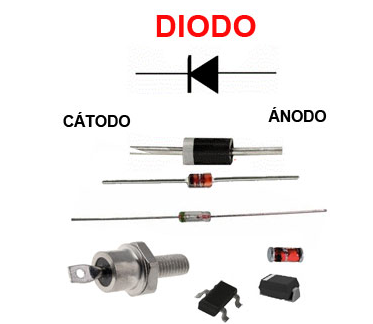

Aula 10 - TRANSISTOR
TRANSISTOR
Transistor é um componente eletrônico semicondutor que tem a característica de permitir o controle da passagem de corrente elétrica.
Ele pode ser usado como Amplificador ou como uma chave eletrônica.
Existem vários tipos de Transistores, aqui vamos abordar o mais comum que é do tipo BIPOLAR.
O Transistor Bipolar é aquele que usa dois tipos de portadores de carga elétrica (elétrons e lacunas) para conduzir eletricidade.
Eles podem ser NPN ou PNP, conforme a combnação dos materiais utilizados.
Aplicações do Transistor
Controle de corrente - Controla o fluxo de corrente entre coletor e emissor, atra´ves de uma pequena corrente de base.
Chave Eletrônica - Quando uma corrente correta é aplicada a sua base, a chave fecha, passando corrente do coletor para o emissor.
Amplificador - Ele amplifica um sinal na base, gerando uma grande variação na corrente de coletor
Transistor NPN
É composto por duas camadas de material N e uma camada de material P no meio. A direção da seta indica o sentido da corrente e sempre é no emissor. Então no NPN seta para fora indica a corrente que sai...
Transistor PNP
A configuração é o inverso do NPN, são duas camadas de material P , com uma camada N no meio. A seta para dentro, indica que a corrente entra.

voltar